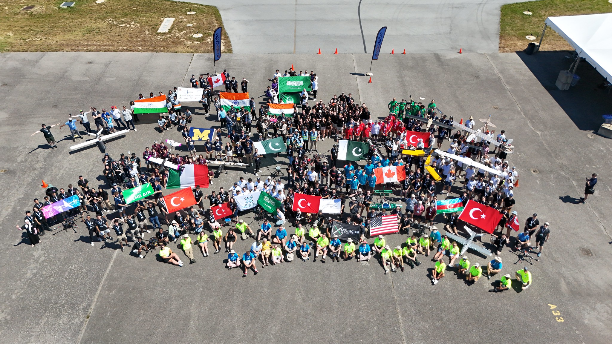
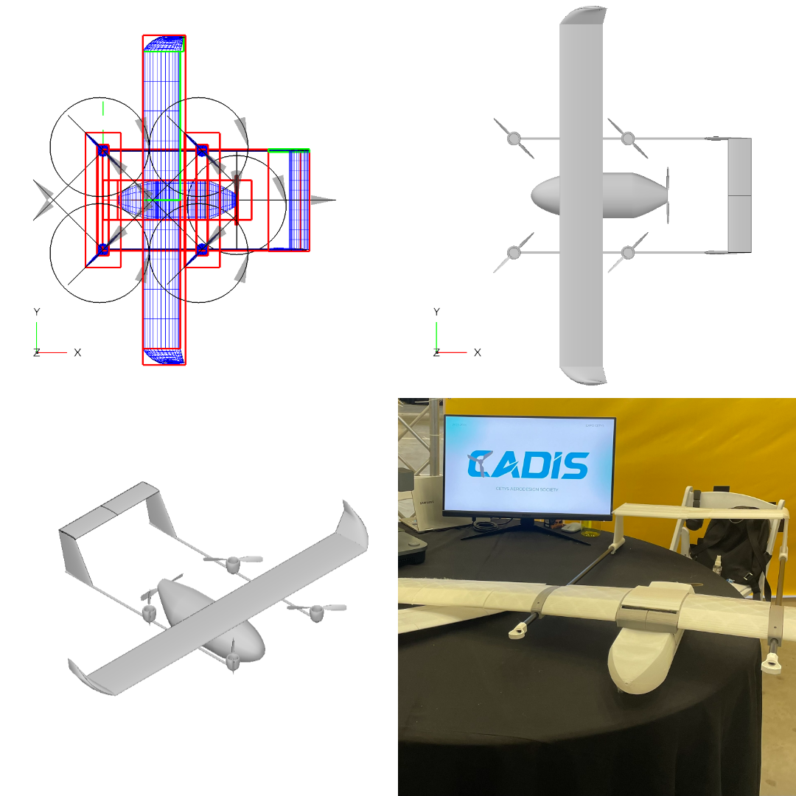

Student Unmanned Aerial Systems Competition (2025)
CETYS University, Tijuana, Mx.

Description
The SUAS (Student Unmanned Aerial Systems) competition is an event aimed at promoting interest in Unmanned Aerial Systems (UAS) by engaging students in challenging missions. Teams must showcase their UAS’s ability to execute tasks such as autonomous flight, navigation, object detection, and delivery, all while adhering to strict safety and efficiency standards.
The student group founded by the author (CADIS), is currently on track to compete in SUAS 2025.
My Contribution

As the founder and president of the student club, some of my responsibilities were:
- Conceptualized UAV, choosing adequate tail and wing configuration, according to design needs. First draft of aircraft sizing.
- Designed wings for additive manufacturing utilizing CAD.
- Printed and assembled the UAV mockup for project presentation.
- Serving as project advisor to new generation of CADIS team members, preparing to compete in SUAS 2025.